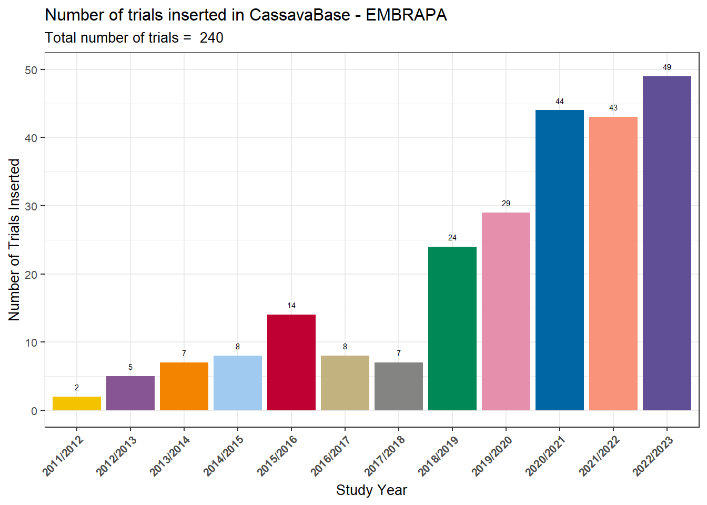
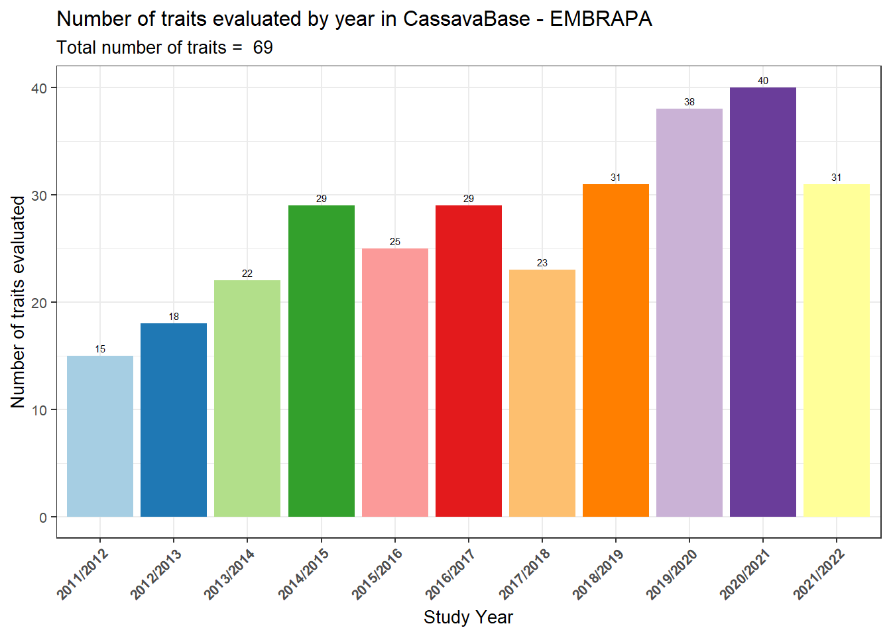

Last updated: 2025-10-04
Checks: 6 1
Knit directory: analisys-next-gen-2022/
This reproducible R Markdown analysis was created with workflowr (version 1.7.2). The Checks tab describes the reproducibility checks that were applied when the results were created. The Past versions tab lists the development history.
The R Markdown file has unstaged changes. To know which version of
the R Markdown file created these results, you’ll want to first commit
it to the Git repo. If you’re still working on the analysis, you can
ignore this warning. When you’re finished, you can run
wflow_publish to commit the R Markdown file and build the
HTML.
Great job! The global environment was empty. Objects defined in the global environment can affect the analysis in your R Markdown file in unknown ways. For reproduciblity it’s best to always run the code in an empty environment.
The command set.seed(20251003) was run prior to running
the code in the R Markdown file. Setting a seed ensures that any results
that rely on randomness, e.g. subsampling or permutations, are
reproducible.
Great job! Recording the operating system, R version, and package versions is critical for reproducibility.
Nice! There were no cached chunks for this analysis, so you can be confident that you successfully produced the results during this run.
Great job! Using relative paths to the files within your workflowr project makes it easier to run your code on other machines.
Great! You are using Git for version control. Tracking code development and connecting the code version to the results is critical for reproducibility.
The results in this page were generated with repository version b39764d. See the Past versions tab to see a history of the changes made to the R Markdown and HTML files.
Note that you need to be careful to ensure that all relevant files for
the analysis have been committed to Git prior to generating the results
(you can use wflow_publish or
wflow_git_commit). workflowr only checks the R Markdown
file, but you know if there are other scripts or data files that it
depends on. Below is the status of the Git repository when the results
were generated:
Ignored files:
Ignored: .Rproj.user/
Ignored: analysis/figure/
Ignored: data/Arquivos Fieldbook 2022/BR.AYTInd.22.CMa_1.xls
Ignored: data/Arquivos Fieldbook 2022/BR.AYTInd.22.Candeal 8MP e 16cm_1.xls
Ignored: data/Arquivos Fieldbook 2022/BR.AYTInd.22.Estab_1.xls
Ignored: data/Arquivos Fieldbook 2022/BR.AYTInd.22.NH 16CM_1.xls
Ignored: data/Arquivos Fieldbook 2022/BR.AYTM.22.Candeal_1.xls
Ignored: data/Arquivos Fieldbook 2022/BR.AYTM.22.Estab_1.xls
Ignored: data/Arquivos Fieldbook 2022/BR.AYTM.22.NH1_1.xls
Ignored: data/Arquivos Fieldbook 2022/BR.AYTM.22.NH_1.xls
Ignored: data/Arquivos Fieldbook 2022/BR.AYTM.22.Pureza_1.xls
Ignored: data/Arquivos Fieldbook 2022/BR.AYTM.Candeal.22_1.xls
Ignored: data/Arquivos Fieldbook 2022/BR.CBGS-C4.22.CNPMF_1.xls
Ignored: data/Arquivos Fieldbook 2022/BR.CET.22.CNPMF.xls
Ignored: data/Arquivos Fieldbook 2022/BR.MULTGS-C3.22.Podium_1.xls
Ignored: data/Arquivos Fieldbook 2022/BR.MultGS.22.NH_1.xls
Ignored: data/Arquivos Fieldbook 2022/BR.PTBAG.22.Candeal Florescimento_1.xls
Ignored: data/Arquivos Fieldbook 2022/BR.PYT.22.Candeal_1.xls
Ignored: data/Arquivos Fieldbook 2022/BR.PYT.22.Jaguaripe_1.xls
Ignored: data/Arquivos Fieldbook 2022/BR.PYTO.22.Lon_1.xls
Ignored: data/Arquivos Fieldbook 2022/BR.UYT.22.Jagua_1.xls
Ignored: data/Arquivos Fieldbook 2022/BR.UYT.22.TRAC_1.xls
Ignored: data/Arquivos Fieldbook 2022/BR.UYT.WD.22.BJL_1.xls
Ignored: data/Arquivos Fieldbook 2022/BR.UYTGS.22.CMa_1.xls
Ignored: data/Arquivos Fieldbook 2022/BR.UYTGS.22.COMG_1.xls
Ignored: data/Arquivos Fieldbook 2022/BR.UYTGS.22.Candeal_1.xls
Ignored: data/Arquivos Fieldbook 2022/BR.UYTGS.22.CoC_1.xls
Ignored: data/Arquivos Fieldbook 2022/BR.UYTGS.22.CoH_1.xls
Ignored: data/Arquivos Fieldbook 2022/BR.UYTGS.22.ER_1.xls
Ignored: data/Arquivos Fieldbook 2022/BR.UYTGS.22.Esp_1.xls
Ignored: data/Arquivos Fieldbook 2022/BR.UYTGS.22.Estab_1.xls
Ignored: data/Arquivos Fieldbook 2022/BR.UYTGS.22.IFGua_1.xls
Ignored: data/Arquivos Fieldbook 2022/BR.UYTGS.22.ItiBA_1.xls
Ignored: data/Arquivos Fieldbook 2022/BR.UYTGS.22.LagDa_1.xls
Ignored: data/Arquivos Fieldbook 2022/BR.UYTGS.22.Mara_1.xls
Ignored: data/Arquivos Fieldbook 2022/BR.UYTGS.22.Mont_1.xls
Ignored: data/Arquivos Fieldbook 2022/BR.UYTGS.22.NH1_1.xls
Ignored: data/Arquivos Fieldbook 2022/BR.UYTGS.22.NH_1.xls
Ignored: data/Arquivos Fieldbook 2022/BR.UYTGS.22.PAMG_1.xls
Ignored: data/Arquivos Fieldbook 2022/BR.UYTGS.22.Quiss_1.xls
Ignored: data/Arquivos Fieldbook 2022/BR.UYTGS.22.SA_1.xls
Ignored: data/Arquivos Fieldbook 2022/BR.UYTGS.22.SDAP_1.xls
Ignored: data/Arquivos Fieldbook 2022/BR.UYTGS.22.TRAC_1.xls
Ignored: data/Arquivos Fieldbook 2022/BR.UYTGS.22.VC_1.xls
Ignored: data/Dados_podridao_2018_2021.xlsx
Ignored: data/TP-BR-18-EMBRAPA-Nextgen.csv
Ignored: data/exclud_c0.csv
Ignored: data/metadata (1).csv
Ignored: data/metadata1.csv
Ignored: data/phenotype (1).csv
Ignored: data/phenotype.csv
Ignored: output/StudyTraits.tiff
Ignored: output/StudyYear.tiff
Unstaged changes:
Modified: analysis/1_Trials-and-traits-2023.Rmd
Note that any generated files, e.g. HTML, png, CSS, etc., are not included in this status report because it is ok for generated content to have uncommitted changes.
These are the previous versions of the repository in which changes were
made to the R Markdown
(analysis/1_Trials-and-traits-2023.Rmd) and HTML
(docs/1_Trials-and-traits-2023.html) files. If you’ve
configured a remote Git repository (see ?wflow_git_remote),
click on the hyperlinks in the table below to view the files as they
were in that past version.
| File | Version | Author | Date | Message |
|---|---|---|---|---|
| Rmd | b439863 | WevertonGomesCosta | 2025-10-04 | update trials-and-traits-2023 |
| html | b439863 | WevertonGomesCosta | 2025-10-04 | update trials-and-traits-2023 |
| Rmd | 4edf925 | WevertonGomesCosta | 2025-10-04 | add scripts rmd |
Ótimo, Weverton 🙌. O código já está bem estruturado, mas podemos refinar as descrições, comentários e interpretações para deixá-lo mais didático e profissional, no estilo de um tutorial científico. Veja a versão aprimorada:
This script analyzes the number of cassava field trials and
traits evaluated per year in the Embrapa Cassava Breeding
Program, using data from CassavaBase.
The objective is to quantify the expansion of the breeding
program in terms of experimental trials and phenotypic traits,
and to provide a detailed summary of the trials conducted in
2022/2023.
We will go through the following steps:
We start by loading the main R packages used in the analysis.
Each package plays a specific role:
- ggthemes / grafify → improve the aesthetics of
plots
- tidyverse → data wrangling and visualization
- readxl → import Excel spreadsheets
- data.table → efficient handling of large
datasets
- genomicMateSelectR → integration with CassavaBase
data formats
- janitor → cleaning and reshaping data tables
library(ggthemes) # Themes for ggplot2
library(grafify) # Color palettes for plots
library(tidyverse) # Data manipulation and visualization
library(readxl) # Import Excel files
library(data.table) # Efficient data handling
library(genomicMateSelectR)# CassavaBase data integration
library(janitor) # Data cleaning helpersWe import the metadata file (metadata1.csv), which
contains information about each trial (year, location, design,
etc.).
This dataset is the foundation for calculating the number of trials per
year.
dbdata <- read_delim(
"data/metadata1.csv",
delim = ";",
escape_double = FALSE,
trim_ws = TRUE
)Here we calculate the number of trials conducted each year.
- We exclude 2023, since data collection was incomplete
at the time of analysis.
- We reformat the year as a crop cycle (e.g.,
2021/2022).
- We group by year and count the number of trials.
- For 2022/2023, we manually adjust the count to 49 trials (based on
fieldbook records).
number_trials_year <- dbdata %>%
filter(studyYear != "2023") %>%
droplevels() %>%
mutate(
studyYear = paste0(studyYear, "/", studyYear + 1),
studyYear = as.factor(studyYear)
) %>%
group_by(studyYear) %>%
tally() %>%
mutate(n = ifelse(studyYear == "2022/2023", 49, n))We visualize the number of trials per year using a bar chart.
Labels above the bars indicate the exact number of trials, and the
subtitle shows the total across all years.
number_trials_year %>%
ggplot() +
geom_col(aes(x = studyYear, y = n, fill = studyYear), show.legend = F) +
geom_text(aes(x = studyYear, y = n + 1, label = n), size = 2, vjust = 0) +
theme_bw() +
scale_fill_grafify(palette = "kelly") +
labs(
title = "Number of trials inserted in CassavaBase - EMBRAPA",
subtitle = paste("Total number of trials = ", sum(number_trials_year$n)),
x = "Study Year",
y = "Number of Trials Inserted"
) +
theme(text = element_text(size = 10),
axis.text.x = element_text(face ="bold", angle = 45, hjust = 1))
| Version | Author | Date |
|---|---|---|
| b439863 | WevertonGomesCosta | 2025-10-04 |
Interpretation:
The plot shows a steady increase in the number of trials since
2018, reflecting the program’s expansion and the systematic
effort to document experiments in CassavaBase.
Next, we calculate how many traits were evaluated
each year.
- We select only trait columns from the phenotype dataset.
- For each year, we compute whether a trait was measured (1) or not
(0).
- We then sum across traits to obtain the total number of traits
evaluated per year.
dbdata <- readDBdata(phenotypeFile = here::here("data", "phenotype.csv"))
number_traits_year <- dbdata %>%
select(studyYear,
amylose.content.in.ug.g.percentage.CO_334.0000075:total.carotenoid.by.iCheck.method.CO_334.0000162) %>%
group_by(studyYear) %>%
summarise(across(
everything(),
~ if (is.numeric(.)) mean(., na.rm = TRUE) else first(.)
)) %>%
mutate(studyYear = paste0(studyYear, "/", studyYear + 1),
studyYear = as.factor(studyYear)) %>%
mutate(across(where(is.numeric), ~ ifelse(is.na(.), 0, 1))) %>%
mutate(sum = rowSums(select(., where(is.numeric)), na.rm = TRUE))number_traits_year %>%
select(where(~ n_distinct(.) > 1)) %>%
ggplot() +
geom_col(aes(x = studyYear, y = sum, fill = studyYear), show.legend = F) +
geom_text(aes(x = studyYear, y = sum, label = sum), vjust = -0.5, size = 2) +
theme_bw() +
scale_fill_brewer(palette = "Paired") +
labs(
title = "Number of traits evaluated by year in CassavaBase - EMBRAPA",
subtitle = paste("Total number of traits = ", ncol(number_traits_year) - 1),
x = "Study Year",
y = "Number of traits evaluated"
) +
theme(text = element_text(size = 10),
axis.text.x = element_text(face ="bold", angle = 45, hjust = 1))
| Version | Author | Date |
|---|---|---|
| b439863 | WevertonGomesCosta | 2025-10-04 |
Interpretation:
The number of traits evaluated has increased over time,
reaching 69 traits in total.
This demonstrates the program’s effort to integrate yield,
quality, and stress tolerance traits into the breeding
pipeline, moving beyond simple yield evaluation.
Finally, we generate a trait-by-year table.
This table indicates with an “x” whether a given trait was evaluated in
a specific year, providing a quick overview of trait coverage across
years.
number_traits_year2 <- number_traits_year %>%
select(-sum) %>%
t() %>%
row_to_names(row_number = 1) %>%
as_tibble(rownames = "Trait") %>%
mutate(across(c(2:12), ~ ifelse(. == 1, "x", NA)))Interpretation:
This table is useful for identifying when each trait started
being measured and for tracking the evolution of
phenotyping priorities in the breeding program.
Now we focus on the field trials conducted in
2022/2023.
This step summarizes the number of trials and the
number of clones evaluated in each trial type (AYT,
PYT, UYT, MULT, CB).
trials_22 <- list.files(path = "data/Arquivos Fieldbook 2022",
pattern = "BR.",
full.names = T) %>%
set_names() %>%
map_df(~ read_excel(., .name_repair = janitor::make_clean_names), .id = "sheet") %>%
mutate(
trial_type = toupper(str_split_i(plot_name, '[.]', 2)),
trial = paste("BR", trial_type, "22", sep = "."),
locate = ifelse(sheet == "data/Arquivos Fieldbook 2022/BR.UYT.WD.22.BJL_1.xls",
str_split_i(plot_name, '[.]', 3),
str_split_i(plot_name, '[.]', -2))
)We calculate the number of unique clones evaluated per trial type.
accession_number <- trials_22 %>%
mutate(accession_name2 = str_split_i(plot_name, '[.]', -1),
accession_name2 = str_split_i(accession_name2, '_', 1),
trial_type = case_when(
str_detect(trial_type, "AYT") ~ "AYT",
str_detect(trial_type, "CB") ~ "CB",
str_detect(trial_type, "MULT") ~ "MULT",
str_detect(trial_type, "PYT") ~ "PYT",
str_detect(trial_type, "UYT") ~ "UYT",
.default = trial_type)) %>%
group_by(trial_type, accession_name2) %>%
tally() %>%
ungroup() %>%
group_by(trial_type) %>%
tally() %>%
ungroup() %>%
rename(n_clones = n)Interpretation:
This table shows how many clones were tested in each type of
trial.
For example:
- AYT: ~113 clones
- PYT: ~156 clones
- UYT: ~95 clones
- MULT: ~1227 clones
- CB: ~258 clones
This reflects the selection funnel: many clones in early stages (PYT/MULT) and fewer in advanced stages (UYT).
We now summarize how many trials were conducted in each category.
trials_22 %>%
mutate(trial_type = case_when(
str_detect(trial_type, "AYT") ~ "AYT",
str_detect(trial_type, "CB") ~ "CB",
str_detect(trial_type, "MULT") ~ "MULT",
str_detect(trial_type, "PYT") ~ "PYT",
str_detect(trial_type, "UYT") ~ "UYT",
.default = trial_type)) %>%
group_by(trial, trial_type, locate) %>%
tally() %>%
ungroup() %>%
group_by(trial_type) %>%
tally() %>%
ungroup()# A tibble: 7 × 2
trial_type n
<chr> <int>
1 AYT 9
2 CB 2
3 CET 1
4 MULT 3
5 PTBAG 1
6 PYT 3
7 UYT 26Interpretation:
This confirms the distribution of trials:
- AYT: 9 trials
- PYT: 3 trials
- UYT: 26 trials
- MULT: 3 trials
- CB: 2 trials
Uniform Yield Trials (UYT) are conducted across multiple locations to test clone stability and adaptation.
UYT <- trials_22 %>%
group_by(trial, trial_type, locate) %>%
tally() %>%
ungroup() %>%
pivot_wider(names_from = locate, values_from = n) %>%
filter(str_detect(trial, "UYT")) %>%
pivot_longer(cols = 3:31, names_to = "locate", values_to = "n") %>%
filter(!is.na(n))
locate_UYT <- UYT %>%
group_by(locate) %>%
tally()Interpretation:
This summary shows how many UYT trials were conducted in each
location (e.g., Cruz das Almas, Laje, Alagoinhas,
Dourados).
It highlights the multi-environment testing strategy of
the breeding program.
We also summarize the other trial types (PYT, AYT, MULT, CB).
trials_22 <- list.files(path = "data/Arquivos Fieldbook 2022",
pattern = "BR.",
full.names = T) %>%
set_names() %>%
map_df(~ read_excel(., .name_repair = janitor::make_clean_names), .id = "sheet") %>%
mutate(trial_type = toupper(str_split_i(plot_name, '[.]', 2)),
trial = paste("BR", trial_type, "22", sep = "."),
locate = ifelse(sheet == "data/Arquivos Fieldbook 2022/BR.UYT.WD.22.BJL_1.xls",
str_split_i(plot_name, '[.]', 3),
str_split_i(plot_name, '[.]', -2))) %>%
group_by(trial, trial_type, locate) %>%
tally() %>%
ungroup() %>%
pivot_wider(names_from = locate, values_from = n) %>%
filter(!str_detect(trial, "UYT")) %>%
select_if(~ !all(is.na(.)))
trials_22 %>%
mutate(soma = rowSums(.[3:ncol(trials_22)], na.rm = T)) %>%
select(trial, trial_type, soma)# A tibble: 11 × 3
trial trial_type soma
<chr> <chr> <dbl>
1 BR.AYTIND.22 AYTIND 1066
2 BR.AYTM.22 AYTM 430
3 BR.CB.22 CB 196
4 BR.CBGS-C4.22 CBGS-C4 110
5 BR.CET.22 CET 832
6 BR.MULT.22 MULT 31
7 BR.MULTGS-C3.22 MULTGS-C3 538
8 BR.MULTGS.22 MULTGS 807
9 BR.PTBAG.22 PTBAG 2585
10 BR.PYT.22 PYT 636
11 BR.PYTO.22 PYTO 98Interpretation:
This table summarizes the non-UYT trials, showing the
number of plots per location.
It provides a clear view of where each trial type was conducted and the
scale of evaluation.
In this tutorial, we:
Key message:
The Embrapa cassava breeding program has significantly expanded its
experimental capacity, both in the number of trials and in the diversity
of traits evaluated. This provides a strong foundation for genomic
selection and the integration of yield, quality, and stress tolerance
traits.
sessionInfo()R version 4.5.1 (2025-06-13 ucrt)
Platform: x86_64-w64-mingw32/x64
Running under: Windows 11 x64 (build 26100)
Matrix products: default
LAPACK version 3.12.1
locale:
[1] LC_COLLATE=Portuguese_Brazil.utf8 LC_CTYPE=Portuguese_Brazil.utf8
[3] LC_MONETARY=Portuguese_Brazil.utf8 LC_NUMERIC=C
[5] LC_TIME=Portuguese_Brazil.utf8
time zone: America/Sao_Paulo
tzcode source: internal
attached base packages:
[1] stats graphics grDevices utils datasets methods base
other attached packages:
[1] janitor_2.2.1 genomicMateSelectR_0.2.0 data.table_1.17.8
[4] readxl_1.4.5 lubridate_1.9.4 forcats_1.0.0
[7] stringr_1.5.2 dplyr_1.1.4 purrr_1.1.0
[10] readr_2.1.5 tidyr_1.3.1 tibble_3.3.0
[13] tidyverse_2.0.0 grafify_5.1.0 ggplot2_4.0.0
[16] ggthemes_5.1.0
loaded via a namespace (and not attached):
[1] Rdpack_2.6.4 gridExtra_2.3 sandwich_3.1-1
[4] rlang_1.1.6 magrittr_2.0.4 git2r_0.36.2
[7] multcomp_1.4-28 snakecase_0.11.1 compiler_4.5.1
[10] mgcv_1.9-3 vctrs_0.6.5 pkgconfig_2.0.3
[13] crayon_1.5.3 fastmap_1.2.0 backports_1.5.0
[16] labeling_0.4.3 utf8_1.2.6 promises_1.3.3
[19] rmarkdown_2.29 tzdb_0.5.0 nloptr_2.2.1
[22] bit_4.6.0 xfun_0.53 cachem_1.1.0
[25] jsonlite_2.0.0 later_1.4.4 parallel_4.5.1
[28] cluster_2.1.8.1 R6_2.6.1 bslib_0.9.0
[31] stringi_1.8.7 RColorBrewer_1.1-3 car_3.1-3
[34] boot_1.3-31 rpart_4.1.24 jquerylib_0.1.4
[37] cellranger_1.1.0 numDeriv_2016.8-1.1 estimability_1.5.1
[40] Rcpp_1.1.0 knitr_1.50 zoo_1.8-14
[43] base64enc_0.1-3 httpuv_1.6.16 Matrix_1.7-3
[46] splines_4.5.1 nnet_7.3-20 timechange_0.3.0
[49] tidyselect_1.2.1 rstudioapi_0.17.1 abind_1.4-8
[52] yaml_2.3.10 codetools_0.2-20 lattice_0.22-7
[55] lmerTest_3.1-3 withr_3.0.2 S7_0.2.0
[58] evaluate_1.0.5 foreign_0.8-90 survival_3.8-3
[61] pillar_1.11.1 carData_3.0-5 whisker_0.4.1
[64] checkmate_2.3.3 reformulas_0.4.1 generics_0.1.4
[67] vroom_1.6.5 rprojroot_2.1.1 hms_1.1.3
[70] scales_1.4.0 minqa_1.2.8 xtable_1.8-4
[73] glue_1.8.0 emmeans_1.11.2-8 Hmisc_5.2-3
[76] tools_4.5.1 lme4_1.1-37 fs_1.6.6
[79] mvtnorm_1.3-3 grid_4.5.1 rbibutils_2.3
[82] colorspace_2.1-1 nlme_3.1-168 patchwork_1.3.2
[85] htmlTable_2.4.3 Formula_1.2-5 cli_3.6.5
[88] workflowr_1.7.2 gtable_0.3.6 sass_0.4.10
[91] digest_0.6.37 TH.data_1.1-4 htmlwidgets_1.6.4
[94] farver_2.1.2 htmltools_0.5.8.1 lifecycle_1.0.4
[97] here_1.0.2 bit64_4.6.0-1 MASS_7.3-65 Weverton Gomes da Costa, Pós-Doutorando, Embrapa Mandioca e Fruticultura, wevertonufv@gmail.com↩︎